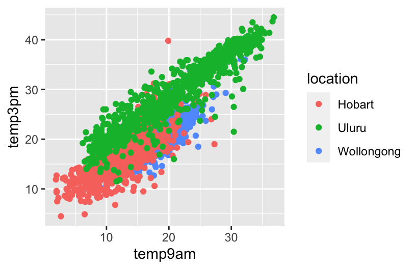
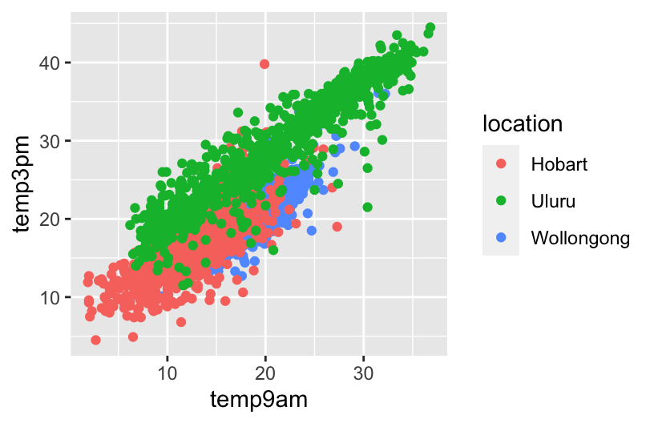
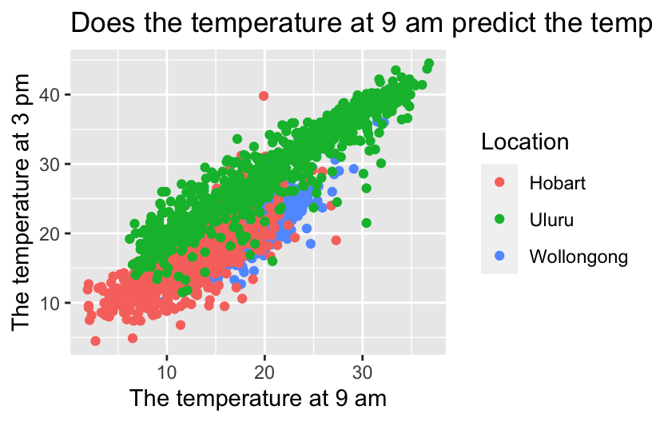
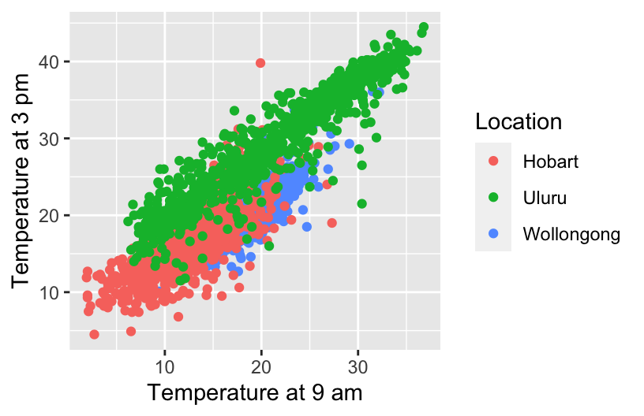
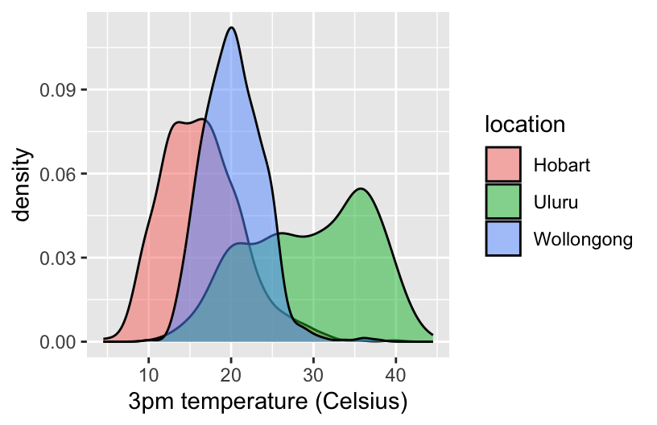
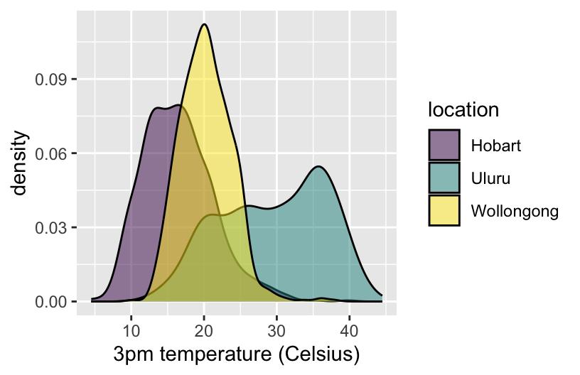
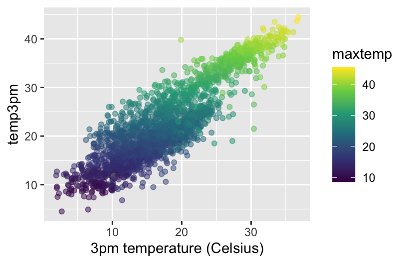

ggplot(weather, aes(y = temp3pm, x = temp9am, color = location)) +
geom_point()
Let’s examine weather in 3 Australian locations.
The following plot is fine for things like homework or just playing around. But we’ll make it more “professional” looking below.
ggplot(weather, aes(y = temp3pm, x = temp9am, color = location)) +
geom_point()
Replace A, B, C, and D in the code below to:
ggplot(weather, aes(y = temp3pm, x = temp9am, color = location)) +
geom_point() +
labs(x = "The temperature at 9 am", y = "The temperature at 3 pm", title = "Does the temperature at 9 am predict the temperature at 3 pm?", color = "Location") 
When we’re including our plot in an article, paper, book, or other similar outlet, we should (and are expected to) provide a more descriptive figure caption. Typically, this is instead of a title and is more descriptive of what exactly is being plotted.
ggplot(weather, aes(y = temp3pm, x = temp9am, color = location)) +
geom_point() +
labs(x = "Temperature at 9 am", y = "Temperature at 3 pm", color = "Location") 
Let’s now make a graphic more accessible.
ggplot(weather, aes(x = temp3pm, fill = location)) +
geom_density(alpha = 0.5) +
labs(x = "3pm temperature (Celsius)") 
Let’s add some alt text that can be picked up by screen readers. This is a great resource on writing alt text for data viz. In short, whereas figure captions are quick descriptions which assume that the viz is accessible, alt text is a longer description which assumes the viz is not accessible. Alt text should concisely articulate:
Add appropriate alt text at the top of the chunk, in fig-alt. Then knit your Rmd, and hover over the image in your knitted html file to check out the alt text.
ggplot(weather, aes(x = temp3pm, fill = location)) +
geom_density(alpha = 0.5) +
labs(x = "3pm temperature (Celsius)") 
Color is another important accessibility consideration. Let’s check out the color accessibility of our density plot.
ggplot() code from Part a in your console. The viz will pop up in the Plots tab.This graph is fine, except if you have Monochromacy/Achromatopsia.
We can change our color schemes! There are many color-blind friendly palettes in R. In the future, we’ll set a default, more color-blind friendly color theme at the top of our Rmds. We can also do this individually for any plot that uses color. Run the chunks below to explore various options.
ggplot(weather, aes(x = temp3pm, fill = location)) +
geom_density(alpha = 0.5) +
labs(x = "3pm temperature (Celsius)") +
scale_fill_viridis_d() 
# In the color scale line:
# Change "fill" to "color" since we use color in the aes()
# Change "d" (discrete) to "c" (continuous) since maxtemp is on a continuous scale
ggplot(weather, aes(y = temp3pm, x = temp9am, color = maxtemp)) +
geom_point(alpha = 0.5) +
labs(x = "3pm temperature (Celsius)") +
scale_color_viridis_c()
Let’s scratch the surface of ethics in data viz. Central to this discussion is the consideration of impact.
At a minimum, our data viz should not mislead. Reconsider the climate change example from above. Why is this plot unethical and what impact might it have on policy, public opinion, etc?
 It is misleading: it shows that global temperature has not increased by a lot, but in reality, even a 2 degree increase is a lot. It might lead to climate deniers asking for the government to stop funding renewables.
It is misleading: it shows that global temperature has not increased by a lot, but in reality, even a 2 degree increase is a lot. It might lead to climate deniers asking for the government to stop funding renewables.
Again, data viz ethical considerations go beyond whether or not a plot is misleading. As described in the warm-up, we need to consider: visibility, privacy, power, emotion & embodiment, pluralism, & context. Depending upon the audience and goals of a data viz, addressing these points might require more nuance. Mainly, the viz tools we’ve learned are a great base or foundation, but aren’t the only approaches to data viz.
Pick one or more of the following examples of data viz to discuss with your group. How do the approaches taken:
Example: W.E.B. Du Bois (1868–1963)
Du Bois (“Doo Boys”) was a “sociologist, socialist, historian, civil rights activist, Pan-Africanist, author, writer, and editor”1. He was also a pioneer in elevating emotion and embodiment in data visualization. For the Paris World Fair of 1900, Du Bois and his team of students from Atlanta University presented 60 data visualizations of the Black experience in America, less than 50 years after the abolishment of slavery. Du Bois noted: “I wanted to set down its aim and method in some outstanding way which would bring my work to notice by the thinking world.” That is, he wanted to increase the impact of his work by partnering technical visualizations with design that better connects to lived experiences. NOTE: This work uses language common to that time period and addresses the topic of slavery. Check out:
Example: One person’s experience with long COVID
Example: Decolonizing data viz
This emphasizes power, and how European data collection and visualization are not the only types that exist: Hmong, Incans, and literally every group has used different methods to visualize data (both quantitative and qualitative).
Example: Visualizing climate change through art
Futures North with Prof John Kim & Mac students (by Prof Kim, Mac research students)
Example: Personal data collection
For a deeper treatment of similar topics, and more examples, read Data Feminism.
Practice critiquing some more complicated data viz listed at Modern Data Science with R, Exercise 2.5.
Think about the following questions:
This final exercise is just “food for thought”. It’s more of a discussion than an exercise, and gets into some of the finer design details and data viz theory. Go as deep or not deep as you’d like here.
In refining the details of our data viz, Visualize This and Storytelling with Data provide some of their guiding principles. But again, every context is different.
Getting into even more of the nitty gritty, we need to be mindful of what geometric elements and aesthetics we use. The following elements/aesthetics are listed in roughly descending order of human ability to perceive and compare nearby objects:2
Finally, here are some facts to keep in mind about visual perception from Now You See It.
Visual perception is selective, and our attention is often drawn to contrasts from the norm.
Implication: We should design visualizations so that the features we want to highlight stand out in contrast from those that are not worth the audience’s attention.
Example: What stands out in this example image? This is originally from C. Ware, Information Visualization: Perception for Design, 2004? Source: S. Few, Now You See It, 2009, p. 33.
 The left side of the picture, and then the 2 centers.
The left side of the picture, and then the 2 centers.
Our eyes are drawn to familiar patterns. We observe what we know and expect.
Implication: Visualizations work best when they display information as patterns that familiar and easy to spot.
Example: Do you notice anything embedded in this rose image from coolbubble.com? Source: S. Few, Now You See It, 2009, p. 34.
 No, I can’t see anything, but I am drawn to the center because it’s the darkest part of the flower.
No, I can’t see anything, but I am drawn to the center because it’s the darkest part of the flower.
Revisit Part b. Do you notice anything in the shadows? Go to https://mac-stat.github.io/images/112/rose2.png for an image.
There is a dolphin lol.
{kind=link}